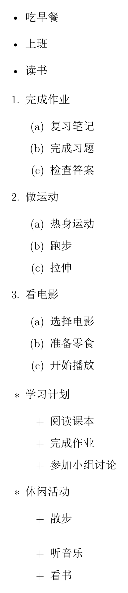
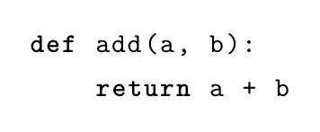
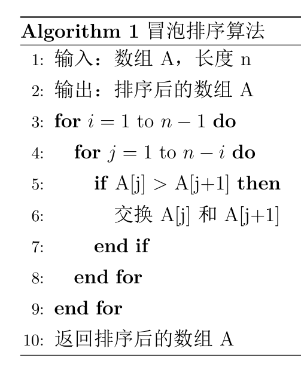
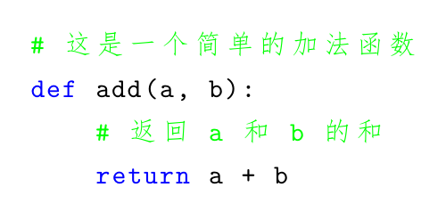
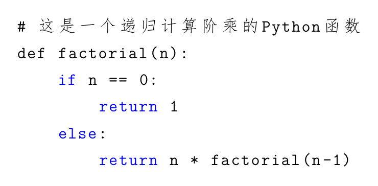
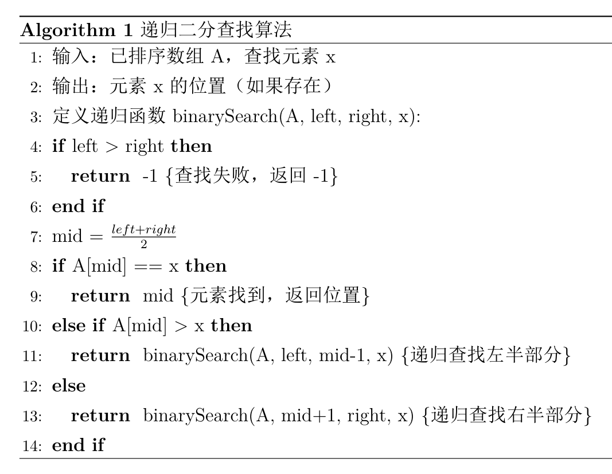
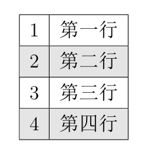
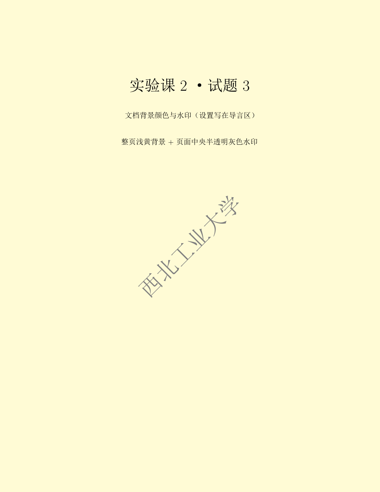

实验课 02：列表、算法、颜色等#
本题集来自《科技论文写作》课程实验课 02《LaTeX 的使用（列表、算法、颜色等）》。同样地，每道题的代码框架都是一份完整可编译的文档，只需补全注释标记的位置。
每道题都附有实际编译渲染的结果图（TeX Live 2026 + XeLaTeX），代码均可直接编译。
编译环境与导言区#
导言区:
\documentclass{ctexart} % 使用 ctexart 类来支持中文
\usepackage{graphicx} % 插入图片的包
\usepackage{amsmath} % 数学公式支持
\usepackage{biblatex} % 引用文献的包
\usepackage{multirow} % 多行表格支持
\usepackage{verbatim} % 引入 verbatim 包来原样显示文本
\usepackage{enumitem} % 列表符号自定义
\usepackage{listings} % 代码排版
\usepackage{algorithm} % 算法浮动体
\usepackage{algorithmic} % 伪代码环境
\usepackage{background} % 水印
\PassOptionsToPackage{table}{xcolor} % 传递 table 选项给 xcolor
\usepackage{xcolor} % 颜色
\usepackage{colortbl} % 表格颜色
\addbibresource{references.bib}
编译方式:
ctexart+ 中文 → 必须用 XeLaTeX。listings宏包在 pdfLaTeX 下无法正确显示代码块里的中文注释（会报Missing character或直接吞掉）。本讲的代码块里有中文注释，所以必须用 XeLaTeX。水印那道题涉及 TikZ 的
current page定位，需要编译两遍水印才会出现（第一遍写.aux，第二遍才定位）。这一点很多人会踩坑，详见最后一题。
实验题：列表与项目符号的使用#
题目：要求完成三部分:
创建一个无序列表，列出三个日常活动；
创建一个嵌套的有序列表，外层用数字编号、内层用字母编号，列出三个任务及其详细步骤；
创建自定义符号列表，外层用「星号」、内层用「加号」。
答案:
% 初级部分：无序列表
\section{无序列表}
\begin{itemize}
\item 吃早餐
\item 上班
\item 读书
\end{itemize}
% 中级部分：嵌套有序列表
\section{嵌套有序列表}
\begin{enumerate}
\item 完成作业
\begin{enumerate}
\item 复习笔记
\item 完成习题
\item 检查答案
\end{enumerate}
\item 做运动
\begin{enumerate}
\item 热身运动
\item 跑步
\item 拉伸
\end{enumerate}
\item 看电影
\begin{enumerate}
\item 选择电影
\item 准备零食
\item 开始播放
\end{enumerate}
\end{enumerate}
% 高级部分：自定义符号列表
\section{自定义符号列表}
\begin{itemize}[label=$\ast$]
\item 学习计划
\begin{itemize}[label=$+$]
\item 阅读课本
\item 完成作业
\item 参加小组讨论
\end{itemize}
\item 休闲活动
\begin{itemize}[label=$+$]
\item 散步
\item 听音乐
\item 看书
\end{itemize}
\end{itemize}
编译结果:

说明:
嵌套列表的默认编号：LaTeX 的
enumerate逐层自动切换编号样式，第一层是1. 2. 3.，第二层是(a) (b) (c)，第三层是i. ii. iii.。所以「内层用字母编号」是默认行为，不需要额外设置。enumitem宏包是列表排版的万能工具，用法是在环境后加可选参数。常用的有:
| 需求 | 写法 |
|---|---|
| 自定义符号 | \begin{itemize}[label=$\ast$] |
| 自定义编号 | \begin{enumerate}[label=(\alph*)] |
| 调整缩进 | \begin{itemize}[leftmargin=2em] |
| 改变间距 | \begin{itemize}[itemsep=0pt, topsep=2pt] |
| 重新开始编号 | \begin{enumerate}[resume] 或 [start=5] |
label里的数学符号要放在$...$中：label=$\ast$（星号）、label=$+$（加号）。也可以用$\star$、$\diamond$。在真实论文里应该按层级用
\subsection或\subsubsection，不要为了排版效果硬套\section——用\section会渲染成大号标题，编号还会和外层文档结构串在一起。enumitem不要与paralist、mdwlist等老宏包同时加载，会冲突。写论文时列表通常要压缩行距，可以全局设置：
\setlist{nosep}。
实验题：插入 Python 代码#
题目：使用 listings 宏包插入一段简单的 Python 代码，内容为一个函数 add(a, b)，返回两个数的和。提示使用 \begin{lstlisting} 环境。
答案:
\begin{lstlisting}[language=Python]
def add(a, b):
return a + b
\end{lstlisting}
编译结果:

说明:
\begin{lstlisting}与\begin{verbatim}类似，里面的内容原样输出，但会根据language选项做语法高亮。常用
language取值：Python、C、C++、Matlab、Java、Verilog。写错大小写不会报错，但也不会高亮。注意：
lstlisting内部的行首缩进会原样保留。 如果\begin{lstlisting}前面有制表符/空格，而代码本身也有缩进，容易多出几格空白——排版时把lstlisting的内容顶格写最省事。
实验题：排序算法的描述#
题目：使用 algorithm 宏包描述一个简单的冒泡排序算法，为每一步加上说明。算法应包含输入、输出、步骤和算法结束条件。
答案:
\begin{algorithm}
\caption{冒泡排序算法}
\begin{algorithmic}[1]
\STATE 输入：数组 A，长度 n
\STATE 输出：排序后的数组 A
\FOR{$i = 1$ to $n-1$}
\FOR{$j = 1$ to $n-i$}
\IF{A[j] > A[j+1]}
\STATE 交换 A[j] 和 A[j+1]
\ENDIF
\ENDFOR
\ENDFOR
\STATE 返回排序后的数组 A
\end{algorithmic}
\end{algorithm}
编译结果:

说明:
algorithmic配合[1]选项能正常输出行号（本文档用 TeX Live 2026 实测，见上面的渲染结果）。命令要用全大写：\STATE、\IF、\ENDIF、\FOR、\ENDFOR、\RETURN、\COMMENT。\STATE是「开始新的一行语句」，每个独立步骤都要写一个\STATE；\FOR、\IF这些本身就会换行，不需要再加\STATE。另一个选择是
algorithmicx套件的algpseudocode，命令改为首字母大写，功能更全（\Function、\Procedure、\Call等）。两套命令对照:
| 功能 | algorithmic |
algpseudocode |
|---|---|---|
| 语句 | \STATE |
\State |
| 条件 | \IF ... \ENDIF |
\If ... \EndIf |
| 否则如果 | \ELSIF |
\ElsIf |
| 循环 | \FOR ... \ENDFOR |
\For ... \EndFor |
| 注释 | \COMMENT{} |
\Comment{} |
| 返回 | \RETURN |
\Return |
| 行号 | [1] |
[1] |
algorithm是浮动体，和table、figure一样会被 LaTeX 挪位置。想固定位置用[H]（需float宏包）。伪代码里的变量要用数学模式（
$A$、$n$），否则渲染成正文字体；建议写成$A[j] > A[j+1]$。
实验题：带注释的代码高亮与自动换行#
题目：插入一个带注释的 Python 代码片段，要求代码能够自动换行，且高亮显示关键字（如 def、return），注释使用不同的颜色。
答案:
\begin{lstlisting}[language=Python, breaklines=true, keywordstyle=\color{blue}, commentstyle=\color{green}]
# 这是一个简单的加法函数
def add(a, b):
# 返回 a 和 b 的和
return a + b
\end{lstlisting}
编译结果:

说明:
breaklines=true开启自动换行。默认情况下lstlisting不换行，一行代码太长会直接冲出页面（Overfull \hbox）。keywordstyle=\color{blue}设置关键字颜色，commentstyle=\color{green}设置注释颜色，stringstyle=\color{red}设置字符串颜色。选项也可以统一放在导言区用
\lstset{...}全局生效；个别代码块再用[...]覆盖，块内选项优先级高于全局设置。想要续行缩进可以加
breakindent=2em，想加续行符号可以加postbreak=\mbox{\textcolor{gray}{$\hookrightarrow$}\space}。不要在
lstlisting里用%——它不会开启注释，反而可能引发莫名其妙的错误，代码原样输出。
实验题：自定义代码样式与算法伪代码的结合（选做）#
题目：文档中插入两部分:
定义一个自定义代码样式用于高亮 Python 代码，要求：关键字蓝色、字符串红色、注释绿色、自动换行；
使用
algorithm宏包描述一个递归实现的二分查找算法，用伪代码描述并标明每步注释，必须包含递归调用和返回条件。
第一部分：自定义代码样式#
样式定义写在导言区:
% 定义自定义代码样式
\lstdefinestyle{mystyle}{
keywordstyle=\color{blue}, % 关键字颜色为蓝色
commentstyle=\color{green}, % 注释颜色为绿色
stringstyle=\color{red}, % 字符串颜色为红色
breaklines=true, % 代码自动换行
basicstyle=\ttfamily, % 使用等宽字体
morekeywords={return, if, else} % 自定义关键字
}
正文中使用:
\subsubsection{自定义代码样式}
\begin{lstlisting}[style=mystyle]
# 这是一个递归计算阶乘的Python函数
def factorial(n):
if n == 0:
return 1
else:
return n * factorial(n-1)
\end{lstlisting}
编译结果:

第二部分：二分查找算法#
\subsubsection{二分查找算法}
\begin{algorithm}
\caption{递归二分查找算法}
\begin{algorithmic}[1]
\STATE 输入：已排序数组 A，查找元素 x
\STATE 输出：元素 x 的位置（如果存在）
\STATE 定义递归函数 binarySearch(A, left, right, x):
\IF{left > right}
\RETURN -1 \COMMENT{查找失败，返回 -1}
\ENDIF
\STATE mid = $\frac{left + right}{2}$
\IF{A[mid] == x}
\RETURN mid \COMMENT{元素找到，返回位置}
\ELSIF{A[mid] > x}
\RETURN binarySearch(A, left, mid-1, x) \COMMENT{递归查找左半部分}
\ELSE
\RETURN binarySearch(A, mid+1, right, x) \COMMENT{递归查找右半部分}
\ENDIF
\end{algorithmic}
\end{algorithm}
编译结果:

说明:
\lstdefinestyle{名字}{...}定义一套可复用的样式，之后用\begin{lstlisting}[style=mystyle]调用。比每个代码块都重写一遍选项干净得多。样式定义必须放在导言区（
\begin{document}之前），否则报Couldn't load requested style。morekeywords={return, if, else}用来补充listings关键词表里没有的词。对更冷门的语言或自定义 DSL，这个选项非常有用。算法里的
\COMMENT{...}会渲染成{注释内容}（带花括号），这是algorithmic的默认注释样式，符合算法排版惯例。\ELSIF生成「else if」，\ELSE生成「else」，三者必须成对闭合。mid = (left+right)/2写成$\frac{left + right}{2}$会渲染成竖排分式；按算法排版惯例其实写成$\mathit{mid} \gets \lfloor (\mathit{left}+\mathit{right})/2 \rfloor$更规范（\gets是赋值箭头，多字母变量要用\mathit{}避免被当成连乘）。
实验题：给文字添加颜色#
题目：为一段文字加上红色字体颜色，内容为「这是一个红色的段落」。提示使用 xcolor 宏包和 \textcolor{} 命令。
答案:
\textcolor{red}{这是一个红色的段落}
编译结果:
说明:
\textcolor{颜色}{内容}是声明式用法，作用范围只在大括号内的那段文字。另一种是开关式用法：
{\color{red} 这是一段红字}。注意必须用花括号把作用范围包起来，否则后面整篇文档都会变成红色——这是新手最经典的事故。xcolor的预定义颜色名：red、blue、green、yellow、orange、purple、gray、lightgray、cyan、magenta、brown、pink等。加载
\usepackage[dvipsnames]{xcolor}可以额外获得NavyBlue、BrickRed、ForestGreen等更雅致的颜色名，写论文配图配色时很有用。更精细的颜色可以自己定义:
\definecolor{myblue}{RGB}{0, 90, 170} % RGB 0~255 \definecolor{mygray}{gray}{0.6} % 灰度 0~1 \definecolor{myteal}{HTML}{008080} % 十六进制
正文里大面积使用彩色文字在学术论文中并不推荐——期刊一般都要求正文黑白。颜色主要用在图表、代码和强调上。
实验题：表格背景色设置#
题目：创建一个包含四行的表格，并为表格的偶数行（第二行和第四行）设置浅灰色背景。提示使用 xcolor 宏包的 table 选项。
答案:
\begin{tabular}{|c|c|}
\hline
1 & 第一行 \\
\hline
\rowcolor{gray!20} 2 & 第二行 \\ % 设置偶数行背景色
\hline
3 & 第三行 \\
\hline
\rowcolor{gray!20} 4 & 第四行 \\ % 设置偶数行背景色
\hline
\end{tabular}
编译结果:

说明:
\rowcolor{颜色}写在某一行的最前面，给这一行整体上色。题目只要求给第 2、4 行上色，逐行手写\rowcolor{gray!20}即可。如果表格很长、要交替行色，用
\rowcolors{起始行}{奇数行颜色}{偶数行颜色}更省事:\rowcolors{1}{white}{gray!20} \begin{tabular}{|c|c|} ... \end{tabular}
此时只需
\usepackage[table]{xcolor}即可（它会自动加载colortbl）。也可以用三个宏包组合，效果等价:
\PassOptionsToPackage{table}{xcolor} % 提前把 table 选项传给 xcolor \usepackage{xcolor} \usepackage{colortbl} % 表格颜色功能
\rowcolor必须写在行首、\hline之后，写在\hline之前无效。gray!20表示「20% 的灰 + 80% 的白」，是xcolor的颜色混合语法，比手算 RGB 方便得多。背景色会盖住横线的一半，看起来横线变细，这是正常现象。
学术论文里的三线表一般不加行背景色，这个技巧更多用在报告、PPT 和附录的数据表里。
实验题：文档背景颜色与水印#
题目：为整个文档设置浅黄色背景，并在页面中央添加水印，水印使用灰色半透明效果。提示使用 \pagecolor 命令和 background 宏包。
答案（注意：这段代码要写在 \begin{document} 之外）:
\usepackage{background}
% 设置水印
\backgroundsetup{
scale=3,
color=gray,
opacity=0.3,
angle=45,
position=current page.center,
contents={西北工业大学} % 设置水印内容
}
\pagecolor{yellow!20} % 设置页面背景颜色
编译结果:

说明:
\backgroundsetup{...}和\pagecolor{...}都必须写在导言区（\begin{document}之前）。写在正文里\backgroundsetup会直接报Undefined control sequence。这条最容易踩：水印需要编译两遍才会出现。
background宏包用 TikZ 的current page节点来定位，而这个节点是从上一遍的.aux文件里读出来的——第一遍编译时它还不存在，所以水印不显示。再编译一遍就有了。 本文档的渲染图就是编译两遍的结果。浅黄色用颜色混合语法写：
yellow!20表示「20% 的黄 + 80% 的白」。想淡一点写yellow!10，想加深写yellow!40!black。\pagecolor{...}写在导言区时对所有页生效；写在正文某处则从当前页开始生效，\nopagecolor可以取消。opacity=0.3控制透明度（0 全透明，1 不透明）；scale=3放大水印文字，不放大就只有正文字号大小。background宏包依赖 TikZ，所以编译会变慢一些。彩色背景非常费墨，只适合电子版；期刊排版一律不接受。
想只在某一页加水印，用
\BgThispage。
小结#
| 考点 | 核心命令 / 宏包 | 最常踩的坑 |
|---|---|---|
| 无序/有序列表 | itemize / enumerate |
嵌套时漏了 \item 直接写环境 |
| 自定义列表符号 | enumitem 的 label= |
符号没放进 $...$ |
| 插入代码 | listings + lstlisting |
pdfLaTeX 下中文注释丢失，行首缩进被原样保留 |
| 自定义代码样式 | \lstdefinestyle{}{} |
写在了正文区，报 Couldn't load style |
| 伪代码 | algorithm + algorithmic |
命令要用全大写，每个步骤都要写 \STATE |
| 代码高亮/换行 | breaklines + keywordstyle |
忘了 breaklines，长行冲出页面 |
| 文字上色 | \textcolor{c}{t} |
用 \color 忘了加大括号分组 |
| 表格行背景 | \rowcolor{gray!20} |
写在 \hline 之前无效 |
| 页面底色 | \pagecolor{yellow!20} |
只在导言区写才对全文生效 |
| 水印 | background + \backgroundsetup |
要编译两遍；写在正文区不生效 |